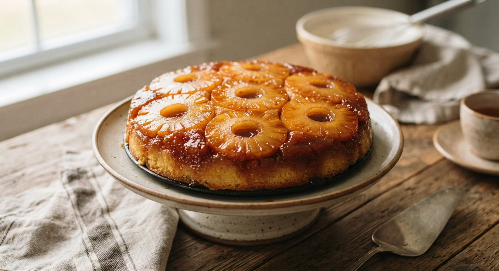

Matafan
Home

An upside-down caramelized pineapple cake is a classic, moist dessert featuring a beautiful golden topping of caramelized fruit.
Baked with rings of sweet pineapple laid over a rich homemade caramel, it is topped with a soft, buttery sponge batter spiked with rum.
Once flipped onto a plate, the caramelized juices soak back into the cake for an incredibly juicy and flavorful finish.
Ingredients
- 1 can of pineapple slices
- 150g of sugar + 150g for the caramel
- 150g of flour
- 150g of butter
- 3 eggs
- 1 packet of baking powder
- 1 packet of vanilla sugar
- 45g of rum
Steps
- Preheat the oven to 180°C (350°F).
- Mix the softened butter with the sugars.
- Add the eggs, flour, baking powder and the brandy.
- In a pan, make the caramel without adding water.
- Once golden brown, pour it into the cake mold, then add the pineapple slices, and finally the batter.
- Bake at 180°C (350°F) for 35 minutes.
- Unmold and flip upside down onto a plate.